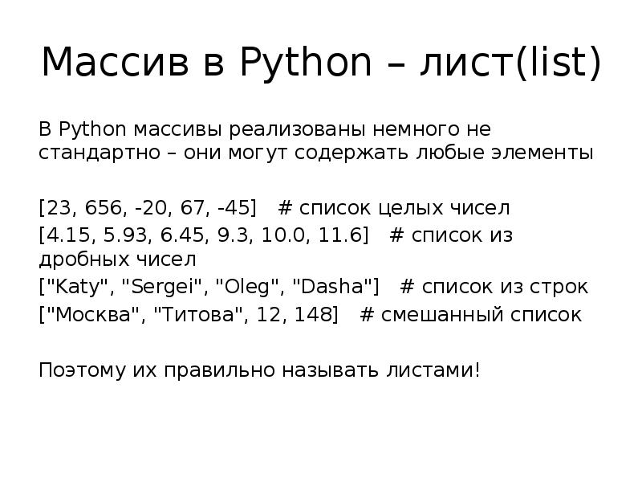
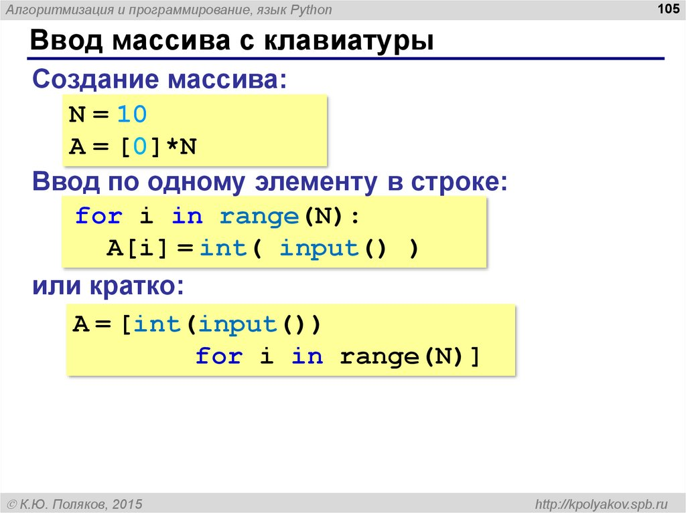
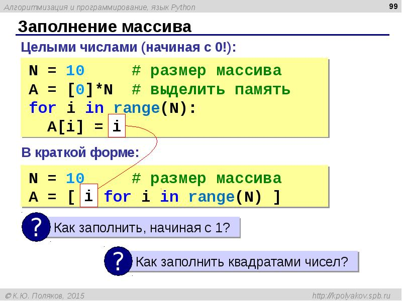

Работа с одномерными массивами
При работе с одномерными массивами в Python можно использовать различные методы и операции для добавления, удаления, изменения и обращения к элементам массива. Также можно выполнять различные математические операции над элементами массива.
Пример работы с одномерным массивом в Python:
arr.append(6) # Добавление элемента в массив
arr.remove(3) # Удаление элемента из массива
arr[2] = 10 # Изменение элемента массива
print(arr.index(5)) # Вывод индекса элемента
a=[1,7,3,88,33]
a.sort() #[1,3,7,33,88] - сортировка
a.reverse() #[88,33,7,3,1] - обратная сортировка
a.index(7) #2 - индекс элемента
a.clear() # - очистка списка
len(a) # - длина списка
sum(a) # - суммирование элементов



Коллекции: Списки / массивы
- Cписки — это изменяемые последовательности в отличие от строк.
-
Представим строку как объект в памяти, в этом случае, когда
над строкой выполняются операции конкатенации и повторения,
то сама строка не меняется, но в результате выполнения
операции в другом месте памяти создается другая строка.
В строку нельзя добавить новый символ или удалить существующий, не создав при этом новой строки.
Пример:
Так, например, в Питоне нельзя переприсваивать значение для отдельных символов строки.
Программа выдаст ошибку!Изменять строку можно только, работая с ней, как с объектом (метод
replace, например):Что касается списков, то при выполнении операций другие списки могут не создаваться, при этом изменяется непосредственно оригинал.
Из списков можно удалять и добавлять новые элементы.
Списки (массивы) в Питоне, как и в других языках программирования, — это определенное количество элементов, которые имеют общее имя, и каждый элемент имеет свой индекс — порядковый номер. В отличие от массивов в других языках, у списков нет никаких ограничений на тип переменных, поэтому в них могут храниться объекты разного типа.
L - список целых чисел: L = [25, 755, -40, 57, -41]
Списки являются упорядоченными последовательностями, которые состоят из различных объектов (значений, данных), заключающихся в квадратные скобки [ ] и отделяющиеся друг от друга с помощью запятой.
Создание списков на Python
-
Создать список можно несколькими способами. Рассмотрим их.
- Так выглядит в коде Python пустой список:
- Примеры создания списков со значениями:
1. Получение списка через присваивание конкретных значений
2. Списки при помощи функции List()
Получаем список при помощи функции List()
3. Создание списка при помощи функции Split()
- Используя функцию split в Питон можно получить из строки список. Рассмотрим пример:
4. Генераторы списков
- В python создать список можно также при помощи генераторов, — это довольно-таки новый метод:
-
Первый простой способ.
Сложение одинаковых списков заменяется умножением:
-
Второй способ сложнее.
или такой пример:
Пример:
Заполнить список квадратами чисел от 0 до 9, используя генератор списка.✍ Решение:
еще пример:
-
Случайные числа в списке:
Задание Python 4_1:
Создайте список целых чисел от -20 до 30 (генерация).Результат:
[-20, -19, -18, -17, -16, -15, -14, -13, -12, -11, -10, -9, -8, -7, -6, -5, -4, -3, -2, -1, 0, 1, 2, 3, 4, 5, 6, 7, 8, 9, 10, 11, 12, 13, 14, 15, 16, 17, 18, 19, 20, 21, 22, 23, 24, 25, 26, 27, 28, 29, 30]
Задание Python 4_2:
Создайте список целых чисел от -10 до 10 с шагом 2 (генерация list).Результат:
[-10, -8, -6, -4, -2, 0, 2, 4, 6, 8, 10]
Задание Python 4_3:
Создайте список из 20 пятерок (генерация).Результат:
[5, 5, 5, 5, 5, 5, 5, 5, 5, 5, 5, 5, 5, 5, 5, 5, 5, 5, 5, 5]
Задание Python 4_4:
Создайте список из сумм троек чисел от 0 до 10, используя генератор списка (0 + 1 + 2, 1 + 2 + 3, …).Результат:
[3, 6, 9, 12, 15, 18, 21, 24, 27, 30, 33]
Задание Python 4_5 (сложное):
Заполните массив элементами арифметической прогрессии. Её первый элемент, разность и количество элементов нужно ввести с клавиатуры.
* Формула для получения n-го члена прогрессии: an = a1 + (n-1) * d
ПРОСТЕЙШИЕ ОПЕРАЦИИ НАД СПИСКАМИ
-
Списки можно складывать (конкатенировать) с помощью знака
«+»:
или так:
-
Операция повторения:
Пример:
Для списков операция переприсваивания значения отдельного элемента списка разрешена!:Можно!
Задание 4_6:
В строке записана сумма натуральных чисел: ‘1+25+3’. Вычислите это выражение. Работать со строкой, как со списком.Начало программы:
В питоне не нужно явно указывать размер списка или вручную выделять на него память. Длину списка можно узнать с помощью встроенной функции
len:
Ввод списка (массива) в языке Питон
-
Простой вариант ввода списка и его вывода:
Функция int здесь используется для того, чтобы строка, введенная пользователем, преобразовывалась в целые числа.
- Как уже рассмотрено выше, список можно выводить целым и поэлементно:
Необходимо задать список (массив) из шести элементов; заполнить его вводимыми значениями и вывести элементы на экран. Использовать два цикла: первый — для ввода элементов, второй — для вывода.
Замечание: Для вывода через «,» используйте следующий синтаксис:
Пример результата:
введите элементы массива: 3.0 0.8 0.56 4.3 23.8 0.7 Массив = 3, 0.8, 0.56, 4.3, 23.8, 0.7
Заполните список случайными числами в диапазоне 20..100 и подсчитайте отдельно число чётных и нечётных элементов. Использовать цикл.
Замечание: работа со случайными числами.
Пример результата:
Часть II: Другие операции над списками при помощи функций
- Функция join() — соединение элементов через определенный символ:
-
Функция split([sep]) — возвращает список подстрок,
получающихся разбиением строки a разделителем sep:
Задание 4_10:
Дан список из 5 различных элементов. Используя функции (не использовать цикл), необходимо найти и вывести:- минимальный и максимальный элементы списка;
- сумму и среднее арифметическое;
- второй минимальный элемент (второй по минимальности).
Начало программы:
Добавление и удаление элементов списка
-
Добавление элемента,
append():Пример:
Поиск нечетных элементов в массиве mas и копирование их в массив B.✍ Решение:
-
Добавление элемента,
extend(): -
Удаление элемента,
remove(): -
Удаление элемента по индексу,
del:
При копировании списков, т.е. присваивании одного списка другому, изменение первого списка влечет за собой изменение второго списка. Так как эти объекты связаны одной областью памяти (ссылка на список).
Чтобы создать не ссылку на список, а копию списка можно использовать либо срез либо функцию copy.
Задание 4_11: Проверить, является ли заданное слово палиндромом.Примечание:
- Пример палиндрома: казак, ABBA
- Использовать функции.
-
Поскольку при присваивании одного списка другому,
изменение первого ведет к аналогичному изменению
второго списка, то необходимо использовать копию (
copy).
Начало программы:
Ключевое слово «in»Проверить, содержит ли список некоторый объект, можно с помощью ключевого слова «
in«:ГЕНЕРАЦИЯ СЛУЧАЙНЫХ ЧИСЕЛ ПРИ РАБОТЕ СО СПИСКАМИ
Вспомним, как работать с модулем
random.Встроенный модуль Питона random позволяет генерировать псевдослучайные числа.
Модуль random включает в себя функцию random, которая возвращает действительное число в диапазоне от 0.0 до 1.0. Каждый раз при вызове функции возвращается число из длинного ряда.
Пример:
Чтобы получить случайное число между 0.0 и верхней границей high, просто умножьте x на high.
Например, от 0.0 до 15.0:
Для того, чтобы получить псевдослучайное целое число:
Для того, чтобы получить псевдослучайное вещественное число:
Еще пример:
Задание Python 4_12:
Найдите в массиве все простые числа и скопируйте их в новый массив.Задание Python 4_13:
Решить задачу поиска среднего значения в списке из N элементов (вводимых в виде строк). Использовать метод добавления элементов списка и суммирования элементовЦИКЛ FOR ПРИ РАБОТЕ СО СПИСКАМИ
В списке чисел проверить, все ли элементы являются уникальными, т.е. каждое число встречается только один раз✍ Решение:
Комментарии к программе:Решать данную задачу на языке Python мы будем «классическим» вариантом — брать по очереди элементы списка и сравнивать каждый элемент со стоящими за ним. При первом же совпадении элементов делается вывод, что в списке есть одинаковые элементы, и работа программы завершается.
Для выхода из цикла будем использовать метод
quit()Задание Python 4_14: Определить индексы элементов массива (списка), значения которых принадлежат заданному диапазону (т.е. не меньше заданного минимума и не больше заданного максимума)
 * в результате получили индексы элементов, значения которых находятся в диапазоне [5,15]
* в результате получили индексы элементов, значения которых находятся в диапазоне [5,15]Алгоритм:
- Заполнить список (массив) случайными числами
- Запросить для ввода минимум и максимум диапазона
- Найти индексы элементов, значения которых входят в диапазон. Добавлять найденные индексы к новому списку
- Вывести общее число найденных индексов (функция len()) и отдельно все индексы
Задание Python 4_15: Дополнить предыдущую программу следующим:После того, как элемент с подходящим значением добавлен в новый список – удалять его из исходного списка
* Использовать цикл while , функцию len()